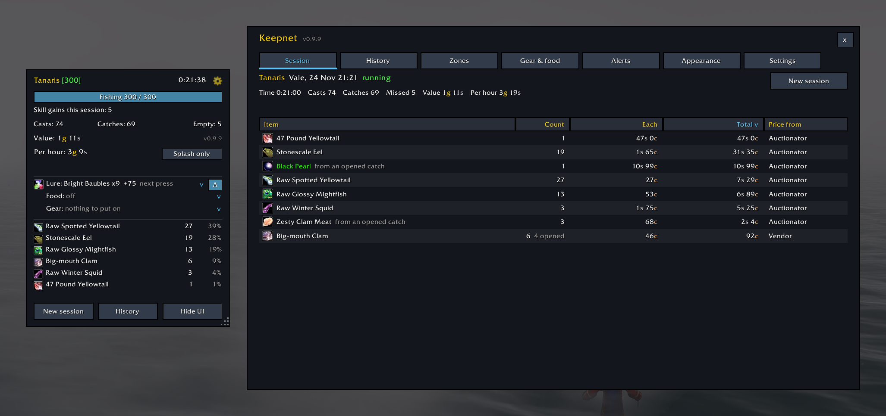
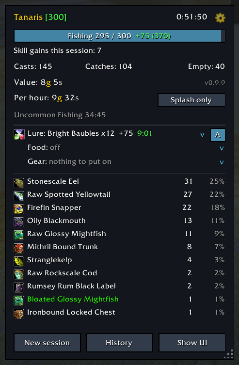
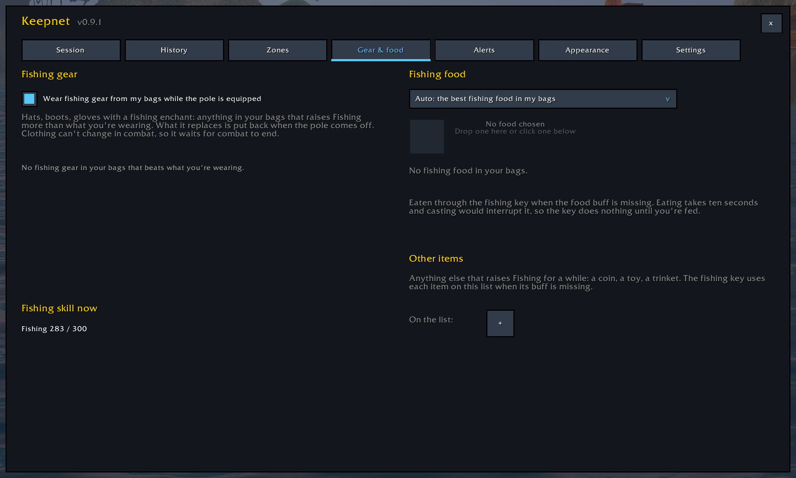
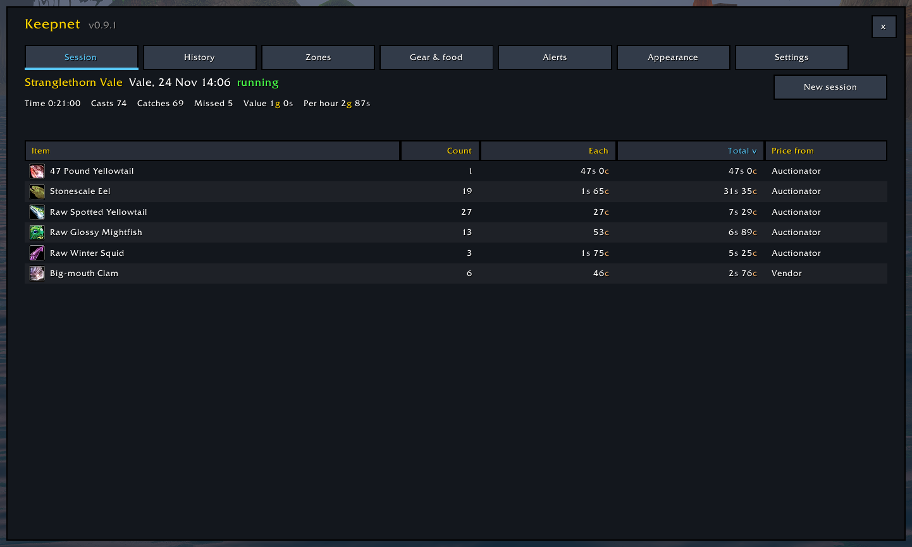
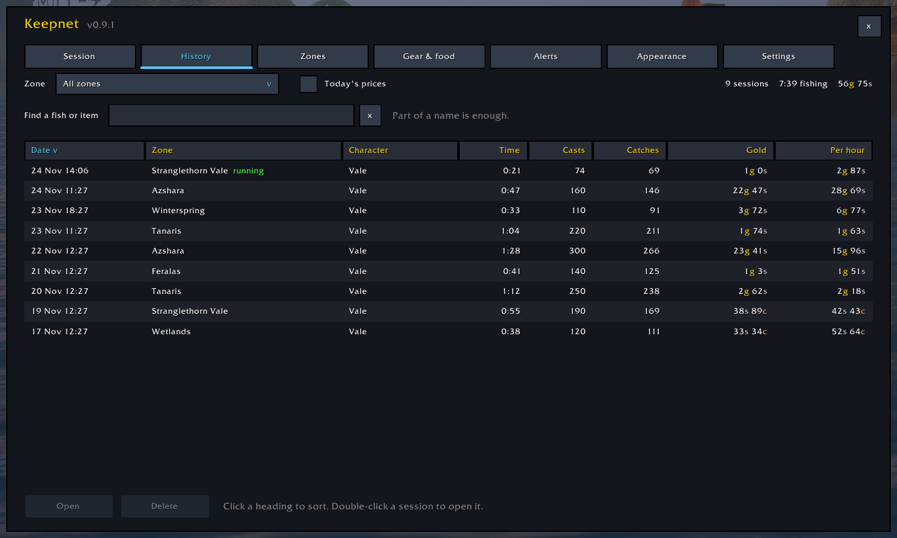
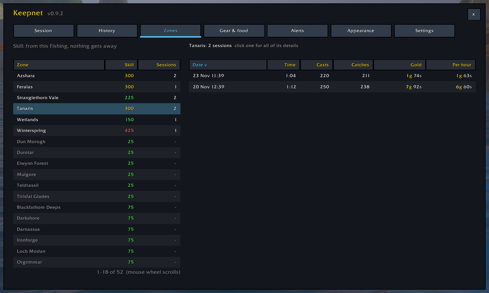
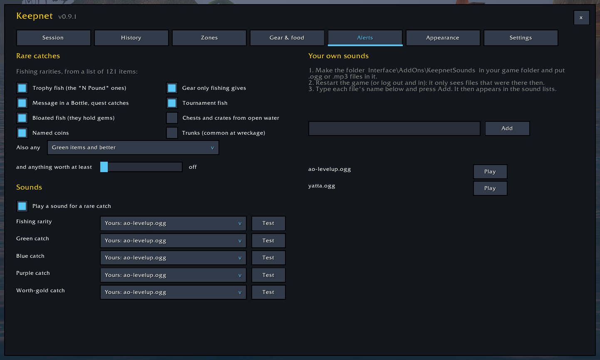
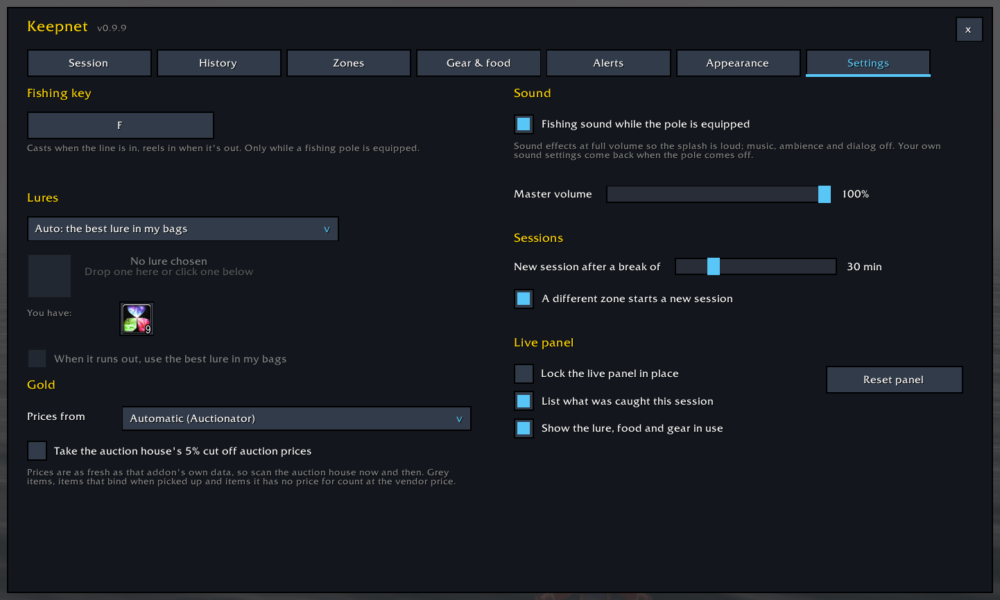

Fish with one key, and see what the catch is worth
Keepnet is a fishing addon for World of Warcraft: Forever. Equip a fishing pole and one key does the fishing: it casts when the line is in and reels in when it's out. A small panel keeps the score while you fish.

/kn.The live panel

- The zone and the skill it asks for. The number in brackets is the Fishing skill that water needs before nothing gets away. Green means you have it, yellow means some fish will get away, red means you can't cast there yet.
- Your Fishing skill as a bar with numbers.
- Casts, catches and empty casts for the session.
- What the catch is worth, and gold per hour, priced from your auction addon and updated every few seconds.
- What's in use: the lure the key applies, your food and your fishing gear, with a button to switch lure-applying on and off.
- Everything caught this session, most first, with each item's count and its share of the catch.
- Splash only / Game audio: one button switches between a loud splash with everything else quiet, and your normal sound.
One key does the fishing
- Casts when the line is in, reels in when it's out. Only while a fishing pole is equipped, so the key is yours again the moment you put the pole away.
- Puts a lure on first when there is none: the best one in your bags, or the one you choose.
- Eats fishing food and uses other items you list (a coin, a toy) when their buff runs out.
- Puts on fishing gear from your bags with the pole, and puts your own back afterwards.
- Every cast, lure and reel-in is your own key press. One press, one action.

Sessions and history
A session starts with your first cast and ends after a break or when you move to another zone. Each one keeps its time, casts, catches and gold.



Where do I catch it?
Type part of a fish's name in History and the list becomes the zones you caught it in, the zone where it made up the largest share of your catch first.
Rare catches
Keepnet knows 121 catches that are rare and come from fishing: every trophy fish, The 1 Ring and the fish weapons, Message in a Bottle, the tournament fish, bloated fish, the chests of open water and the named coins. Most of them are plain white or grey items, so item quality alone would never flag them.
- A sound, a line on screen, a chat line and a highlight on the panel.
- Tick which kinds you want to hear about.
- Also alert for any item of a chosen quality, or worth a chosen amount of gold.
- A different sound for each kind of catch, including sound files of your own.

Out of your way
- Hide the game's interface while fishing: everything except the live panel, or just the parts you tick. It comes back by itself when you move, when combat starts, or when something needs an answer.
- Set how solid the panel's background is, down to just its text over the game, and how big the panel is.
Theming is a work in progress.
Prices
Gold figures come from the auction addon you choose: Auctionator, TradeSkillMaster, Auctioneer, aux or Oribos Exchange. Grey items, items that bind when picked up and anything without an auction price count at the vendor price. An item with no price at all is left out of the total and shown as "without price", never counted as zero.

Commands
| Command | What it does |
|---|---|
/kn or /keepnet | Open the window |
/kn new | End the session; a new one starts with your next cast |
/kn panel | Hide or show the live panel |
/kn ui | Hide the game's interface, or bring it back |
/kn demo | Show sample sessions, to try the screens before you have a history |
Good to know
- Disable other one-key fishing addons while you use Keepnet: they bind the same key and change the same game settings.
- Your own sound settings and key come back when the pole comes off.
- Lures and fishing food are recognised from their English tooltips.
- Auction addons are optional. Without one, everything counts at vendor prices.